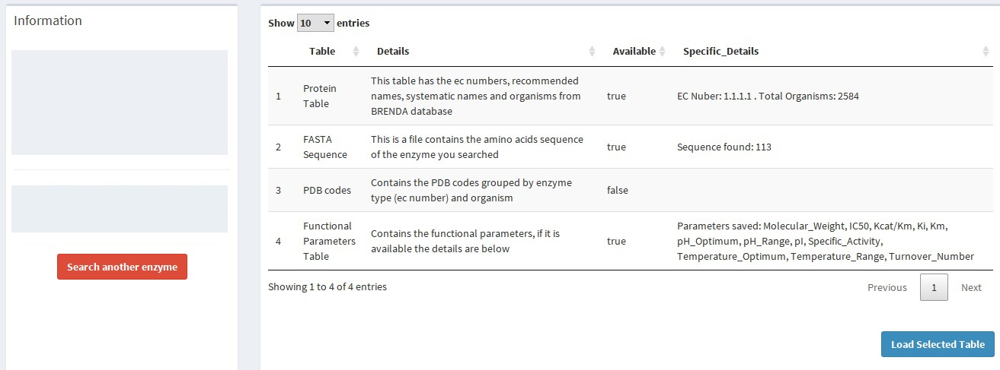

<div style="height:60vh; overflow-y: scroll">
    <div id="8" class="seccion level1">
      <h2>Saved tables</h2>
      <p>Brenda Easy Search Tool saves your in order to do your analysis easier. If you already make a query before, there will be a message on the toolbar.</p>
      
      <p>To load the saved table, click the "more info" link to be redirected.</p>
      
      <p>
        On the table in the right panel, select the tables you want to load. Particularly, the saved protein table, which contains the organisms and type of enzyme according to the 
         EC number, will be going to be load whether it was selected or not.
      </p>
      
      <p>
        After the selection is done, click the "Load Selected Table" blue button below the table. The selected table (include the Protein table) is going to be regenerated and the 
        not selected are going to be erased. If you change your mind and don't want to save this tables anymore, change the section (using 
        <a href="#4">quick access or dashboard menu</a>
        ) or click the "Search another enzyme" red button on the sidebar and the tables are going to be erased.
      </p>
      
    </div>
</div>
